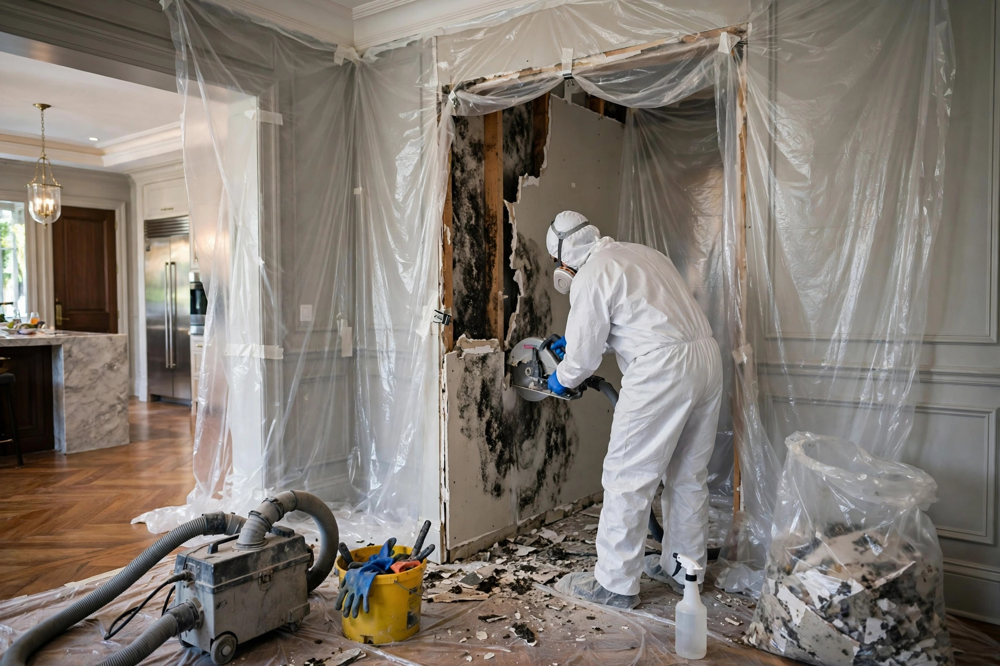

Mold Removal in Eagle, ID
When mold has taken hold in an Eagle home — behind millwork, under wide-plank floors, inside wall cavities — it needs to come out completely. Removed, with the moisture source fixed.
When removal isn't needed
We'll tell you straight if your situation doesn't warrant full removal. A tiny surface patch with an obvious fixed cause? Clean it, dry it, watch it. Save your money.
What removal actually involves
Containment first
Poly sheeting seals the work area. Negative air machines keep spores from drifting into clean rooms while we work.
Remove, don't just clean
Moldy drywall, insulation, and carpet get bagged and taken out. Porous materials can't be reliably decontaminated.
HEPA everything
Remaining surfaces get HEPA-vacuumed and wiped. Air scrubbers run throughout to capture airborne spores.
Fix the moisture
The leak, condensation, or humidity source gets addressed. Without this step, mold returns — guaranteed.
A homeowner in Banbury finds dark streaking behind the baseboards in a guest room after pulling furniture away from the wall. Investigation reveals a pinhole leak in a supply line inside the wall that's been misting the drywall for months. The fix: containment around the room, removal of the affected drywall section, drying the stud bay, repairing the line, and rebuilding. The streaking was the symptom; the leak was the disease.
Not every mold problem needs the same response
A small patch on a bathroom ceiling from a one-time overflow is a different job than mold spreading through wall cavities. Here's how to think about it.
Surface-level growth
A patch smaller than your hand on a hard, non-porous surface — tile, glass, metal — can often be cleaned with detergent and thorough drying. No wall opening required. The key is confirming the moisture source is gone.
Porous materials affected
Once mold reaches drywall or insulation, surface cleaning isn't enough — affected sections get cut out and replaced.
Multi-room or structural
Growth across several rooms or into framing calls for full containment: sealed barriers, negative air pressure, and systematic removal per IICRC S520.
Straight answers
What's the difference between mold removal and mold remediation?
They're often used interchangeably. Strictly speaking, 'removal' is the physical act of taking moldy material out, while 'remediation' is the full process — containment, removal, cleaning, and fixing the moisture source. When you call (321) 985-3339, you're getting the full process, not just a wipe-down.
Can mold come back after removal?
Only if the moisture comes back. Mold is everywhere in tiny amounts; it becomes a problem when water feeds it. A proper job removes the growth AND fixes the leak, condensation, or humidity that caused it. That's why the moisture fix is non-negotiable.
Do I need to move out during mold removal?
Usually not. Containment with negative air pressure keeps the work zone isolated from your living space. For very large jobs affecting bedrooms or the only bathroom, we might suggest timing it when you can be elsewhere — but most Eagle jobs proceed with the family home.
How do I know the mold is really gone?
Moisture meter readings at or below normal for the material, no visible growth, and no musty odor in the treated area. For extra confidence after large jobs, independent post-remediation air testing compares indoor spore counts to outdoor baseline.
Will my homeowner's insurance cover mold removal?
It depends on the cause. Sudden water events (burst pipe) are often covered; long-term leaks and maintenance issues usually aren't. Document everything with photos and moisture readings — that paper trail matters if you file a claim.
Why Eagle homes need a careful hand
Eagle's market is luxury — and luxury finishes complicate remediation. Here's what makes these jobs different from a standard tract-home cleanup.
Premium finishes, precise cuts
Custom trim, wainscoting, and stone accents can't be ripped out casually. Removal has to be surgical — cutting drywall along clean lines that a finisher can blend invisibly. We plan every cut with the rebuild in mind.
Wide-plank and engineered floors
Eagle homes favor beautiful wood floors that hate moisture. When water wicks under them, the question is always salvage vs. replace — and the answer depends on how long the floor stayed wet and what the moisture meter says underneath.
- Containment protects the rest of your home — especially important with open floor plans common in newer Eagle builds.
- We document moisture readings before, during, and after so you have a clear record.
- Rebuild matches existing finishes; the goal is invisible repair, not a patch that announces itself.
Mold that needs to go?
Call now. We'll talk through what you're seeing and lay out exactly what removal involves for your situation.